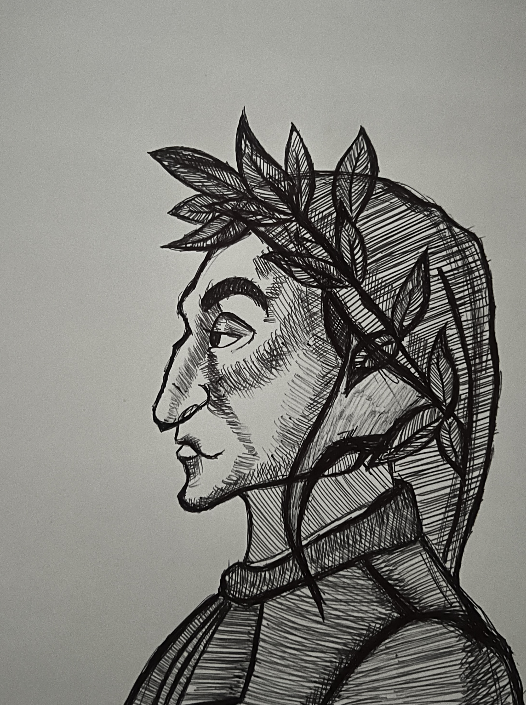
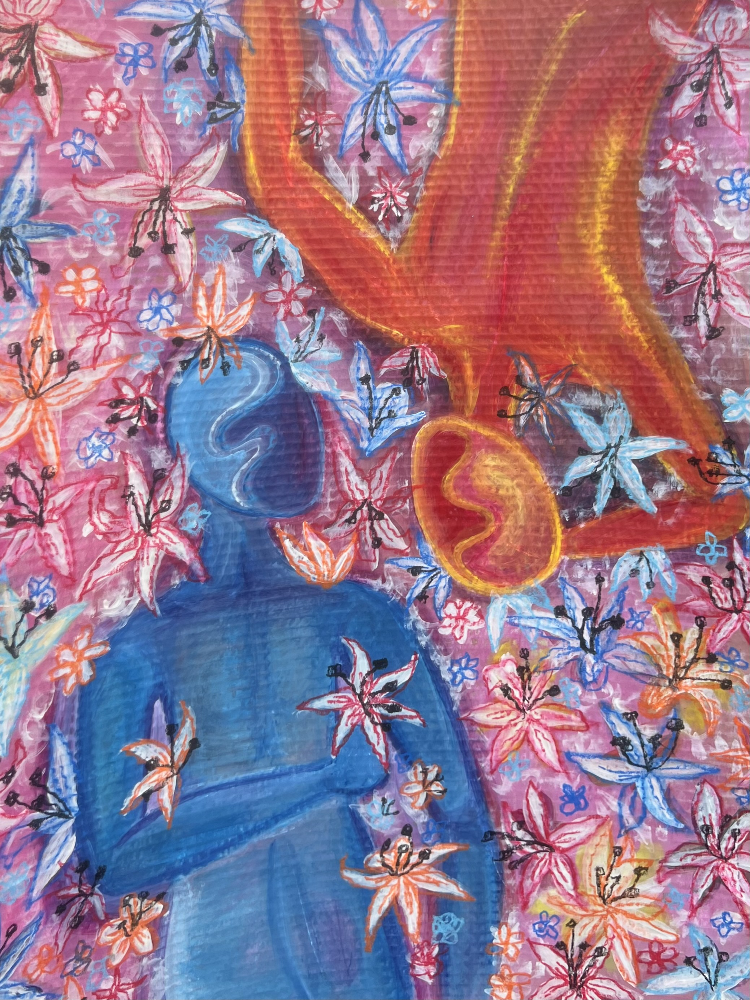
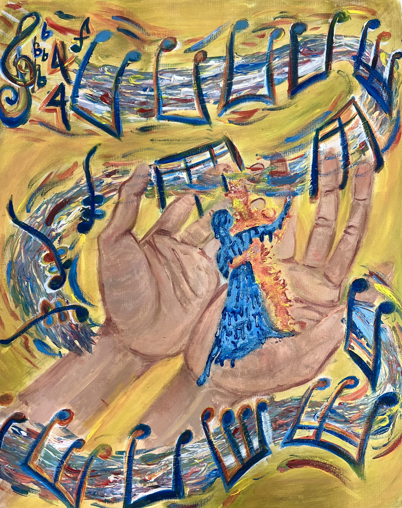

Paintings & Drawings
Light & the Living World
Paintings and drawings attending to the natural world: light through leaves, the stillness of flowers, figures in motion. This practice runs alongside architectural study as a space for a different kind of attention, slower and more intimate, rooted in direct observation.





Titled Pieces
Tree of Dreams
A tree rendered in dreamlike, layered light. Explores the threshold between observation and imagination in the natural landscape.
Dante
Figural work referencing the poet. A study in literary character rendered through paint and line.
Lillies
Close study of lilies attending to petal form, shadow, and the quality of floral light.
The Last Dance
A figure in movement, capturing the energy and transience of a final moment on the floor.
Jumping Into the Sun
A figure leaping toward light, caught between earth and sky. Study in movement, photographic and painted.